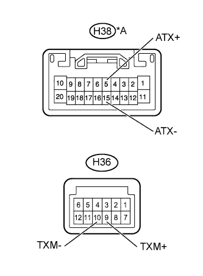

АУДИОВИЗУАЛЬНАЯ СИСТЕМА (для моделей без системы навигации) > Ошибка обмена данными с радиоприемником |
| 1.ОПРЕДЕЛИТЕ УСТРОЙСТВО, СООТВЕТСТВУЮЩЕЕ ВСПОМОГАТЕЛЬНОМУ КОДУ |
Войдите в режим диагностики.
Нажмите кнопку переключателя настройки "channel 3" для перехода в "режим отображения подробной информации".
Идентифицируйте устройство по вспомогательному коду.
| ДАЛЕЕ | |
| 2.ПРОВЕРЬТЕ УСТРОЙСТВО, СООТВЕТСТВУЮЩЕЕ ВСПОМОГАТЕЛЬНОМУ КОДУ |
Выберите устройство, сохранившее данный код.
| Устройство | Следующий шаг |
| Другие компоненты, кроме модуля громкой связи "Bluetooth" и спутникового тюнера | А |
| Модуль громкой связи "Bluetooth" (19D) (для моделей без вспомогательного индикатора) | B |
| Модуль громкой связи "Bluetooth" (19D) (для моделей со вспомогательным индикатором) | C |
|
| ||||
|
| ||||
| А | |
| 3.ПРОВЕРЬТЕ ЦЕПЬ ПИТАНИЯ УСТРОЙСТВА, СООТВЕТСТВУЮЩЕГО ВСПОМОГАТЕЛЬНОМУ КОДУ |
Проверьте цепь питания устройства, соответствующего вспомогательному коду.
| Устройство | Следующий шаг |
| Компонентный стереоусилитель (440)* | Цепь питания компонентного стереоусилителя (Нажмите здесь) |
| ЭБУ мультимедийного интерфейса (388) | Цепь питания ЭБУ мультимедийного интерфейса (Нажмите здесь) |
| ДАЛЕЕ | |
| 4.ПРОВЕРЬТЕ РАДИОПРИЕМНИК В СБОРЕ |
|  |
Отсоедините разъемы H38* и H36 радиоприемника.
Измерьте сопротивление в соответствии со значениями, приведенными в таблице ниже.
| Контакты для подключения диагностического прибора | Условие | Заданные условия |
| H38-5 (ATX+) - H38-15 (ATX-)* | Всегда | 60–80 Ом |
| H36-9 (TXM+) - H36-10 (TXM-) | Всегда | 60–80 Ом |
| *A | Для моделей с 9 динамиками |
| Результат | Следующий шаг |
| OK | А |
| NG (для моделей без вспомогательного индикатора) | B |
| NG (для моделей со вспомогательным индикатором) | C |
|
| ||||
|
| ||||
| А | |
| 5.ПРОВЕРЬТЕ ЖГУТ ПРОВОДОВ И РАЗЪЕМ (РАДИОПРИЕМНИК - УСТРОЙСТВО, УКАЗЫВАЕМОЕ ПОСРЕДСТВОМ ВСПОМОГАТЕЛЬНОГО КОДА) |
Используя приведенную ниже схему соединений, проверьте цепь AVC-LAN между радиоприемником и устройством, указываемым посредством вспомогательного кода.
Отсоедините все разъемы между радиоприемником и устройством, указываемым посредством вспомогательного кода.
Проверьте, нет ли обрыва или короткого замыкания в цепи AVC-LAN между радиоприемником и устройством, указываемым посредством вспомогательного кода.
|
| ||||
| OK | |
| 6.ЗАМЕНИТЕ УСТРОЙСТВО, СООТВЕТСТВУЮЩЕЕ ВСПОМОГАТЕЛЬНОМУ КОДУ |
Замените устройство, соответствующее вспомогательному коду, и проверьте, проявляется ли неисправность повторно.
| Результат | Следующий шаг |
| OK | А |
| NG (для моделей без вспомогательного индикатора) | B |
| NG (для моделей со вспомогательным индикатором) | C |
|
| ||||
|
| ||||
| А | ||
| ||